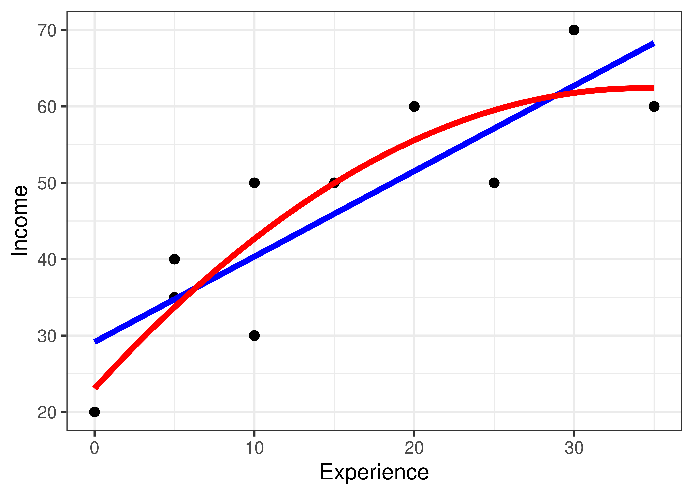
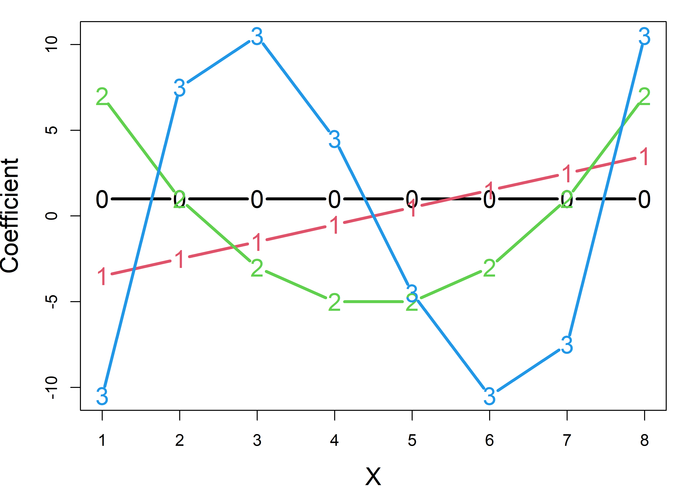

Although this book is primarily about multivariate models, it is useful to have an overview of the range of available techniques for univariate response models to see their uses and to appreciate how easily univariate models generalize to multivariate ones. Hence, this chapter reviews the characteristics of the standard univariate methods for explaining or predicting a single outcome variable from a set of predictors.
The key ideas are:
For a single quantitative outcome variable \(\mathbf{y}\), methods of linear regression and analysis of variance (ANOVA) are comprised within a single framework of the general linear model (GLM). Regression and ANOVA differ only in that the predictors in the former are quantitative, while those in the latter are discrete factors. They can all be fit using
lm().These models extend directly to the multivariate case of \(q > 1\) outcomes, \(\mathbf{Y} = (\mathbf{y}_1, \mathbf{y}_2, \dots \mathbf{y}_q)\), and are also fit using
lm().A binary outcome \(y = (0, 1)\) and categorical outcomes like marital status (“never married”, “married”, “separated”, “divorced”) can be handled within a different extension, the generalized linear model as logistic regression or multinomial regression, fit using
glm().All of these models involve linear combinations of predictors (weighted sums) fit to optimize some criterion, for example minimizing some function of the residuals or maximizing some measure of fit.
Models and data can be more easily understood with graphics, and many statistical ideas have a visual representation in geometry.
Figure fig-techniques summarizes a variety of methods for linear models, classified by number of predictors and number of response variables, and whether these are quantitative vs. discrete. For the present purposes, the key columns are the first two, for the case of one or more quantitative outcome variables.
When the predictors are also quantitative, simple regression (\(p=1\)) generalizes to multivariate regression with two or more outcomes (\(q > 1\)). For example we might want to predict weight and body mass index jointly from a person’s height.
The situation is more interesting when there are \(p>1\) predictors. The most common multivariate generalization is multivariate multiple regression (MMRA), where each outcome is regressed on the predictors, as if done separately for each outcome, but using multivariate tests that take correlations among the response variables into account. Other methods for this case include canonical correlation analysis, which tries to explain all relations between \(\mathbf{Y}\) and a set of \(\mathbf{x}\)s through maximally correlated linear combinations of each.
When the predictor variables are all discrete or categorical, such as gender or level of education, methods like the simple \(t\)-test, one-way ANOVA and factorial ANOVA with \(q=1\) outcome measures all have simple extensions to the case of \(q>1\) outcomes.
History Corner: Twins Reared Apart
Why are there so many different names for regression vs. ANOVA concepts, statistics and techniques? In regression, we use notation like \(x_1, x_2, ...\) to refer to predictors in a model, while in ANOVA, factors \(A, B, ...\) are called main effects. In regression applications, we often test linear hypotheses, are interested in coefficients and evaluate a model with an \(R^2\) statistic, while in ANOVA we may test contrasts among factor levels, and use \(F\)-tests to evaluate models.
Well, like twins separated at birth, they grew up in homes in different places and with different parents, who were each free to choose their own names, not recognizing their shared DNA.
Methods of regression began in evolutionary biology with Francis Galton’s (1886, 1889) studies of heritability of traits, trying to understand how strongly the physical characteristics of one generation of living things resembled those in the next generation. From a study of the diameters of sweet peas in parent plants and their size in the next generation, and another on the relationship between heights of human parents and their offspring, he developed the fundamental ideas of regression. Karl Pearson (1896) formalized the mathematical technique of regression and laid the foundation for the extension to multiple regression.
In contrast, analysis of variance methods were raised on farms, notably the Rothamsted Experimental Station, where R. A. Fisher analyzed vast amounts of data on crop experiments designed to determine the conditions (soil condition, fertilizer treatments) that gave the greatest yields, while controlling for extraneous determiners (plots of planting). With multiple factors determining the outcome, Fisher (1923), in an experiment on yields of different varieties of potatoes given various manure treatments, devised the method of breaking down the total variance into portions attributable to each factor and presented the first ANOVA table. The method became well-known after Fisher’s (1925) Statistical Methods for Research Workers.
The great synthesis of regression and ANOVA did not take place until the 1960s. At that time, methods for computing were beginning to move from programmable desk calculators to mainframe computers, largely using a collection of separate FORTRAN programs, designed for regression, one-way ANOVA, two-way ANOVA, models with interactions, and so forth. To complete an analysis, as a graduate student I often had to use three or more different programs.
Then, something remarkable happened on two fronts: theory and computation. First, in quick succession textbooks by Scheffé (1960), Graybill (1961), Winer (1962) and others began to layout a general theory of linear models that encompassed all of these separate models, giving the “General Linear Model” its well-deserved name. Second, two symposiums, one at IBM Yorkdown Heights (IBM (1965)) and the other at the University of Georgia (Bashaw & Findley (1967)) resulted in the first general programs to handle all these cases in an understandable way.
A bit of matrix algebra thrown into the mix showed that most of the ideas for univariate models could be extended to multiple response variables, and so the “**Multivariate Linear Model” was born. R. Darrell Bock (Bock, 1963, 1964) sketched a flowchart of the computational steps, which was implemented at the University of Chicago by Jeremy Finn (1967) in the MULTIVARIANCE program. A group at the University of North Carolina headed by Elliot Cramer developed their MANOVA program (Clyde et al., 1966) and Willard Dixon (1965) at UCLA developed the BMD programs incorporating these ideas. The ANOVA and regression twins had finally become part of a larger family.
Packages
In this chapter I use the following packages. Load them now:
5.1 The General Linear Model
To establish notation and terminology, it is worthwhile to state the general linear model formally. For convenience, I use vector and matrix notation. This expresses a response variable, \(\mathbf{y} = (y_1, y_2, \dots , y_n)^\mathsf{T}\) for \(n\) observations, as a sum of terms involving \(p\) regressors, \(\mathbf{x}_1, \mathbf{x}_2, \dots , \mathbf{x}_p\), each of length \(n\).
\[\begin{aligned} \mathbf{y} & = \beta_0 + \beta_1 \mathbf{x}_1 + \beta_2 \mathbf{x}_2 + \cdots + \beta_p \mathbf{x}_p + \mathbf{\epsilon} \\ & = \left[ \mathbf{1},\; \mathbf{x}_1,\; \mathbf{x}_2,\; \dots ,\; \mathbf{x}_p \right] \; \boldsymbol{\beta} + \boldsymbol{\epsilon} \\ \end{aligned} \tag{5.1}\]
or, expressed in matrices,
\[ \large{\mathord{\mathop{\mathbf{y}}\limits_{n \times 1}} = \mathord{\mathop{\mathbf{X}}\limits_{n \times (p+1)}}\; \mathord{\mathop{\mathbf{\boldsymbol{\beta}}}\limits_{(p+1) \times 1}} + \boldsymbol{\epsilon}} \]
The matrix \(\mathbf{X}\) is called the model matrix and contains the numerical representations of the predictor variables called regressors. The essential thing about a linear model is that it is linear in the parameters \(\beta_i\). That is, the predicted value of \(\mathbf{y}\) is a linear combination of some \(\mathbf{x}_i\) with weights \(\beta_i\). An example of a nonlinear model is the exponential growth model, \(y = \beta_0 + e^{\beta_1 x}\), where the parameter \(\beta_1\) appears as an exponent.1
These can be quantitative variables like
age,salaryoryearsof education. But they can also be transformed versions, likesqrt(age)orlog(salary).A quantitative variable can be represented by more than one model regressor, for example if it is expressed as a polynomial like
poly(age, degree=2)or a natural spline likens(salary, df=5). The model matrix portion for such terms contains one column for each degree of freedom (df) and there aredfcoefficients in the corresponding portion of \(\boldsymbol{\beta}\).A categorical or discrete predictor– a factor variable in R– with \(d\) levels is expressed as \(d - 1\) columns in \(\mathbf{X}\). Typically these are contrasts or comparisons between a baseline or reference level and each of the remaining ones, but any set of \(d - 1\) linearly independent contrasts can be used by assigning to
contrasts(factor). For example,contrasts(factor) <- contr.treatment(4)for a 4-level factor assigns 3 contrasts representing comparisons with a baseline level, typically the first (in alphabetic order). For an ordered factor, such as one for political knowledge with levels “low”, “medium”, “high”,contrasts.poly()returns the coefficients of orthogonal polynomial contrasts representing linear and quadratic trends.Interactions between predictors are represented as the direct products of the corresponding columns of \(\mathbf{X}\). This allows the effect of one predictor on the response to depend on values of other predictors. For example, the interaction of two quantitative variables, \(\mathbf{x}_1, \mathbf{x}_2\) is represented by the product \(\mathbf{x}_1 \times \mathbf{x}_2\). More generally, for variables or factors \(A\) and \(B\) with degrees of freedom \(\text{df}_A\) and \(\text{df}_B\) the regressors in \(\mathbf{X}\) are the \(\text{df}_A \times \text{df}_B\) products of each column for \(A\) with each column for \(B\).
5.1.1 Model formulas
Statistical models in R, such as those fit by lm(), glm() and many other modelling function in R are expressed in a simple notation that was developed by Wilkinson & Rogers (1973) for the GENSTAT software system at the Rothamsted Research Station. It solves the problem of having a compact way to specify any model consisting of any combinations of quantitative and discrete factor variables, interactions of these and arbitrary transformations of these.
In this, a model formula take the forms
response ~ terms
response ~ term1 + term2 + ...where the left-hand side, response specifies the response variable in the model and the right-hand side specifies the terms in the model specifying the columns in the \(\mathbf{X}\) matrix of Equation eq-glm; the coefficients \(\beta\) are implied and not represented explicitly in the formula.
The notation y ~ x is read as “y is modeled by x”. The left-hand side is usually a variable name (such as height), but it could be an expression that evaluates to the the response, such as log(salary) or weight/height^2 which represents the body mass index.
On the right-hand side (RHS), the usual arithmetic operator, +, -, *, /, ^ have special meanings as described below. The most fundamental is that y ~ a + b is interpreted as “y is modeled by a and b”; that is, the sum of linear terms for a and b.
Some examples for regression-like models using only quantitative variables, x, x1, x2, x3, ... are shown below:
y ~ x # simple linear regression
y ~ x - 1 # no intercept: regression through the origin
y ~ x + I(x^2) # quadratic model
y ~ poly(x, 3) # cubic model
y ~ x1 * x2 # crossing: x1 + x2 + x1 : x2
y ~ x1 + x2 + x3 # multiple regression
y ~ (x1 + x2 + x3)^2 # response surface: all quadratics & two-way interactions
log(y) ~ x1 + poly(x, 2) # arbitrary transformation of response
y1 + y2 ~ x1 + x2 + x3 # response is sum of y1 and y2The intercept \(\beta_0\) is automatically included in the model without need to specify it explicitly. The minus sign, - on the right-hand side removes terms from the model, so a model with no intercept \(\beta_0 = 0\) can be specifies as y ~ X -1 (or perhaps more naturally, y ~ 0 + X).
Function calls on the RHS, such as poly(x, 3) are evaluated directly, but to use a special model operator, like ^ must be “protected” by wrapping the term in I(), meaning “identity” or “inhibit”. Thus, the model y ~ x + I(x^2) means the quadratic model \(y = \beta_0 + \beta_1 x + \beta_2 x^2\). This differs from the model y ~ poly(x, 2) in that the former uses the raw x, x^2 values (which are necessarily positively correlated) while poly() converts these to orthogonal polynomial scores, which are uncorrelated (and therefore free from problems of collinearity).
Example 5.1 Workers data: Regression models
For the workers data (Example exm-workers-pca) you can fit simple regression models predicting income from years of experience using a linear and quadratic model as follows.
data(workers, package = "matlib")
workers.mod1 <- lm(Income ~ Experience, data=workers)
coef(workers.mod1) |> t() |> t()
# [,1]
# (Intercept) 29.16
# Experience 1.12
workers.mod2 <- lm(Income ~ poly(Experience, 2), data=workers)
coef(workers.mod2) |> t() |> t()
# [,1]
# (Intercept) 46.5
# poly(Experience, 2)1 39.1
# poly(Experience, 2)2 -11.2(In this code, coef(workers.mod2) |> t() |> t() is used to print the coefficients as a one-column matrix.)
It is simplest to understand these models by plotting the data overlaid with the fitted regressions. Ths uses geom_smooth() and specifies the smoothing model as method = "lm" with a formula, which is y ~ x for the linear model and y ~ poly(x, 2) for the quadratic.
ggplot(data = workers,
aes(x = Experience, y = Income)) +
geom_point(size = 3) +
geom_smooth(method = "lm", formula = y ~ x,
se = FALSE, linewidth = 2,
color = "blue") +
geom_smooth(method = "lm", formula = y ~ poly(x, 2),
se = FALSE, linewidth = 2,
color = "red")

The coefficients of the linear model are also easy to interpret:
\[ \operatorname{\widehat{Income}} = 29.162 + 1.119(\operatorname{Experience}) \]
So a worker with zero years of experience can expect an income of $29162 and this should increase by $1119 for each additional year. However, it is not so simple to interpret the coefficients when a poly() term is used. Naively plugging in the coefficients for workers.mod2 gives
\[ \operatorname{\widehat{Income}} = 46.5 + 39.111(\operatorname{Experience}) - 11.16(\operatorname{Experience^2}) \]
The problem is that \(x\) = Experience in model workers.mod is represented not by the raw values, but rather by values of \(x\) and \(x^2\) that have been made to be uncorrelated. If you really want to interpret the coefficient values in terms of years of experience, use the option raw = TRUE in poly():
\[ \operatorname{\widehat{Income}} = 23.07 + 2.3(\operatorname{Experience}) - 0.03(\operatorname{Experience}^2) \] This says that income is predicted to be $23,068 with no experience, increase initially by $2295, but that yearly increase decreases by $330. Some further details of orthogonal polynomials are explained below.
5.1.1.1 Factors
Factor variables are treated specially in linear models, but have simple notations in R formulas. The following examples use A, B, C to represent discrete factors with two or more levels.
y ~ A # one-way ANOVA
y ~ A + B # two-way, main effects only
y ~ A * B # full two-way, with interaction
y ~ A + B + A:B # same, in long-hand
y ~ x + A # one-way ANCOVA
y ~ (A + B + C)^2 # three-way ANOVA, incl. all two-way interactions5.1.1.2 Crossing
The * operator has special meaning used to specify the crossing of variables and factors and : specifies interactions (products of variables). So, the model y ~ x1 * x2 is expanded to give y ~ x1 + x2 + x1:x2 and the interaction term x1:x2 is calculated as \(x_1 \times x_2\). In algebraic notation (omitting the error term) this works out to the model,
\[\begin{aligned} y & = & \beta_0 + \beta_1 x_1 + \beta_2 x_2 + \beta_1 x_1 * \beta_2 x_2 \\ & = & \beta_0 + (\beta_1 + \beta_2 x_2) x_1 + \beta_2 x_2 \:\: ,\\ \end{aligned}\]
which means that the coefficient for \(x_1\) in the model is not constant for all values of \(x_2\), but rather changes with the value of \(x_2\). If \(\beta_2 > 0\), the slope for \(x_1\) increases with \(x_2\) and vice-versa.
y ~ A * B for factors is similar, expanding to y ~ A + B + A:B, but the columns in the model matrix represent contrasts among the factor levels as described in detail below (sec-contrasts). The main effects, A and B come from contrasts among the means of their factor levels and the interaction term A:B reflects differences among means of A across the levels of B (and vice-versa).
The model formula y ~ x + A specifies an ANCOVA model with different intercepts for the levels of A, but with a common slope for x. Adding an interaction of x:A in the model y ~ x * A allow separate slopes and intercepts for the groups.
5.1.1.3 Powers
The ^ exponent operator indicates powers of a term expression to a specified degree. Thus the term (A + B)^2 is identical to (A + B) * (A + B) which expands to the main effects of A, B and their interaction, also identical to A * B. In general, the product of parenthesized terms expands as in ordinary algebra,
y ~ (A + B) * (C + D) -> A + B + C + D + A:C + A:D + B:C + B:DPowers get more interesting with more terms, so (A + B + C)^2 is the same as (A + B + C) * (A + B + C), which includes main effects of A, B and C as well as all two-way interactions, A:B, A:C and B:C. The model formula (A + B + C)^3 expands to include all two-way interactions and the three-way interaction A:B:C.
(A + B + C)^3 -> A + B + C + A:B + A:C + B:C + A:B:CIn this context - can be use to remove terms, as shown in the following examples
(A + B + C)^2 <-> (A + B + C)^3 - A:B:C
(A + B + C)^3 - B:C - A:B:C <-> A + B + C + A:B + A:C Finally, the symbol . on the right-hand side specifies all terms in the current dataset other than the response. Thus if you have a data.frame containing y, x1, x2, ..., x6, you can specify a model with all variables except x6 as predictors as
y ~ . - x6To test what we’ve covered above,
What do you think the model formula
y ~ .^2means in a data set containing variablesx1, x2, x3,andx4?What about the formula with
y ~ .^2 - A:B:C:Dwith factorsA, B, C, D?
You can work out questions like these or explore model formulae using terms() for a "formula" object. The labels of these terms can then be concatenated to a string and turned back into a formula using as.formula():
f <- formula(y ~ (x1 + x2 + x3 + x4)^2)
terms = attr(terms(f), "term.labels")
terms |> paste(collapse = " + ")
# [1] "x1 + x2 + x3 + x4 + x1:x2 + x1:x3 + x1:x4 + x2:x3 + x2:x4 + x3:x4"
# convert back to a formula
as.formula(sprintf("y ~ %s", paste(terms, collapse=" + ")))
# y ~ x1 + x2 + x3 + x4 + x1:x2 + x1:x3 + x1:x4 + x2:x3 + x2:x4 +
# x3:x45.1.2 Model matrices
As noted above, a model formula is used to generate the \(n \times (p+1)\) model matrix, \(\mathbf{X}\), typically containing the column of 1s for the intercept \(\beta_0\) in the model, followed by \(p\) columns representing the regressors \(\mathbf{x}_1, \mathbf{x}_2, \dots , \mathbf{x}_p\). Internally, lm() uses stats::model.matrix() and you can use this to explore how factors, interactions and other model terms are represented in a model object.
For a small example, here are a few observations representing income (inc) and type of occupation, taking on values bc (blue colar), wc (white colar) and prof (professional). model.matrix() takes a one-sided formula with the terms on the right-hand side. The main effect model looks like this:
set.seed(42)
inc <- round(runif(n=9, 20, 40))
type <- rep(c("bc", "wc", "prof"), each =3)
mm <- model.matrix(~ inc + type)
data.frame(type, mm)
# type X.Intercept. inc typeprof typewc
# 1 bc 1 38 0 0
# 2 bc 1 39 0 0
# 3 bc 1 26 0 0
# 4 wc 1 37 0 1
# 5 wc 1 33 0 1
# 6 wc 1 30 0 1
# 7 prof 1 35 1 0
# 8 prof 1 23 1 0
# 9 prof 1 33 1 0As you can see, type, with 2 degrees of freedom is represented by two dummy (0/1) variables, labeled typeprof and typewc here. Together, these represent treatment contrasts (comparisons) between the baseline group type=="bc", which is coded (0, 0) and each of the others: type=="prof", coded (1, 0) and type=="wc", codes (0, 1). Different coding schemes are described in the following section.
In a model with the interaction inc * type, additional columns are constructed as the product of inc with each of the columns for type. We will see below how this generalizes to an arbitrary number of predictor terms and their possible interactions.
model.matrix(~ inc * type)
# (Intercept) inc typeprof typewc inc:typeprof inc:typewc
# 1 1 38 0 0 0 0
# 2 1 39 0 0 0 0
# 3 1 26 0 0 0 0
# 4 1 37 0 1 0 37
# 5 1 33 0 1 0 33
# 6 1 30 0 1 0 30
# 7 1 35 1 0 35 0
# 8 1 23 1 0 23 0
# 9 1 33 1 0 33 0
# attr(,"assign")
# [1] 0 1 2 2 3 3
# attr(,"contrasts")
# attr(,"contrasts")$type
# [1] "contr.treatment"5.1.3 Coding factors and contrasts
Discrete explanatory variables, such as race, type of occupation or level of education require special attention in linear models because, unlike continuous variables, they cannot by entered into the model equation just as they are. Instead, we need some way to code those variables numerically.
A key insight is that your choice of a coding scheme changes the meaning of the model parameters, and allows you to perform different comparisons (test different statistical hypotheses) about the means of the category levels according to meaningful questions in your research design. For a more general discussion of coding schemes, see Fox & Weisberg (2018), sec. 4.7 and the vignette Coding Matrices, Contrast Matrices and Linear Models for the codingMatrices package.
Each coding scheme for a factor represents the same model in terms of fitted values and overall significance for that term, but they differ in how the coefficients are parameterized and interpreted. This is crucial to understand, because tests of the coefficients can directly answer different research questions depending on the coding scheme used.
In R, categorical variables are called factors usually created by g <- factor(g) or g <- as.factor(g) for a discrete variable g. If levels of the variable g are ordered, such as type of occupation with levels "bc" < "wc" < "prof" or dose of a drug, "low" < "medium" < "high", you can use g <- ordered(g) to reflect this.
In any case, a factor with \(k\) levels is reflected in an overall test with \(k-1\) degrees of freedom corresponding to the null hypothesis \(\mathcal{H}_0 : \mu_1 = \mu_2 = \cdots = \mu_k\). This can be represented as \(k-1\) comparisons among the factor level means, or \(k-1\) separate questions asking how the means differ.
Base R provides several coding schemes via assignment to the contrasts() function for a factor, as in contrasts(df$Drug) <- ... one of:
contr.treatment(): Compares each level to a reference level using \(k-1\) dummy (0, 1) variables. This is the default, and the reference level is taken as the first (in alphabetic or numerical order). You can change the reference level usingrelevel()orreorder()for the factor, or simply usingfactor(A, levels = ...).contr.sum(): Compares each level to the grand mean.contr.helmert(): Compares each level to the mean of the previous levels, which is useful for ordered categories such astypeof occupation with levels"bc"<"wc"<"prof"or dose of a drug,"low"<"medium"<"high".contr.poly(): For ordered factors with numeric levels, this creates orthogonal polynomial contrasts, representing the linear, quadratic, cubic … trends in the factor means, as if these appeared as \(x, x^2, x^3, ...\) terms in a model with \(x\) as a numeric variable.
TODO: Move some stuff from 10.3.1 on contrasts here
I take up some of the details of these coding schemes below. But first, it is useful to define exactly what I mean by a contrast. For a factor with \(k\) groups, a contrast is simply a comparison of the mean of one subset of groups against the mean of another subset. This is specified as a weighted sum, \(L\) of the means \(\mathbf{\mu}\) with weights \(\mathbf{c}\) that sum to zero,
\[ L = \mathbf{c}^\mathsf{T} \boldsymbol{\mu} = \sum_i^k c_i \mu_i \quad\text{such that}\quad \Sigma c_i = 0 \; . \]
Two contrasts, \(\mathbf{c}_1\) and \(\mathbf{c}_2\) are orthogonal if the sum of products of their weights is zero, i.e., \(\mathbf{c}_1^\top \mathbf{c}_2 = \Sigma c_{1i} \times c_{2i} = 0\). When contrasts are placed as columns of a matrix \(\mathbf{C}\), they are all mutually orthogonal if each pair is orthogonal, which means \(\mathbf{C}^\top \mathbf{C}\) is a diagonal matrix. If the columns of \(\mathbf{C}\) are normalized to have sums of squares = 1, then \(\mathbf{C}^\top \mathbf{C} = \mathbf{I}\).
Orthogonal contrasts correspond to statistically independent tests. This is nice because they reflect separate, non-overlapping research questions. Another consequence is that the sums of squares for the overall hypothesis of differences among the groups is exactly decomposed as the sum of the sum of squares accounted for by the \(k-1\) contrasts \(L_i\):
\[ \text{SS}_{\text{group}} = \sum_i^{k-1} \text{SS} (L_i) \; . \]
Treatment coding
Let’s examine R’s default coding scheme, contr.treatment (also called dummy coding), for a factor with 4 levels: ‘a’, ‘b’, ‘c’, and ‘d’, with a view to understanding the relationship between the true population means, \(\mu_a\), \(\mu_b\), \(\mu_c\), and \(\mu_d\) and the parameters \(\boldsymbol{\beta}\) estimated in a linear model. We get the following:
C <- contr.treatment(letters[1:4]) |> print()
# b c d
# a 0 0 0
# b 1 0 0
# c 0 1 0
# d 0 0 1Here, the columns of C correspond to three dummy variables for the levels b, c, d compared to the reference level a. If we denote these columns as \(x_b\), \(x_c\), and \(x_d\), then:
\[ x_b = \begin{cases} 1 & \! \text{if factor=b} \\ 0 & \! \text{otherwise} \end{cases} ;\quad X_c = \begin{cases} 1 & \! \text{if factor=c} \\ 0 & \! \text{otherwise} \end{cases} ;\quad X_d = \begin{cases} 1 & \! \text{if factor=d} \\ 0 & \! \text{otherwise} \end{cases} \]
The design matrix \(\mathbf{X}_{(4 \times 4)} = [\mathbf{1}, \mathbf{C}] = [\mathbf{1}, \mathbf{x}_b, \mathbf{x}_c, \mathbf{x}_c]\) includes the constant column \(\mathbf{1}\) representing the intercept, which averages over the factor levels when there are other terms in the model.
\[ \mathbf{X} = \begin{pmatrix} 1 & 0 & 0 & 0 \\ 1 & 1 & 0 & 0 \\ 1 & 0 & 1 & 0 \\ 1 & 0 & 0 & 1 \end{pmatrix} \]
With this coding, the parameters \(\boldsymbol{\beta}\) in the model are related to the means \(\boldsymbol{\mu}\) as,
\[ \begin{pmatrix} \mu_a \\ \mu_b \\ \mu_c \\ \mu_d \\ \end{pmatrix} = \mathbf{X} \boldsymbol{\beta} = \begin{bmatrix} 1 & 0 & 0 & 0 \\ 1 & 1 & 0 & 0 \\ 1 & 0 & 1 & 0 \\ 1 & 0 & 0 & 1 \\ \end{bmatrix} \begin{pmatrix} \beta_0 \\ \beta_b \\ \beta_c \\ \beta_d \\ \end{pmatrix} = \begin{pmatrix} \beta_0 \\ \beta_0 + \beta_b \\ \beta_0 + \beta_c \\ \beta_0 + \beta_d \\ \end{pmatrix} \]
Thus we have,
\[ \begin{pmatrix} \mu_a \\ \mu_b \\ \mu_c \\ \mu_d \\ \end{pmatrix} = \begin{pmatrix} \beta_0 \\ \beta_0 + \beta_b \\ \beta_0 + \beta_c \\ \beta_0 + \beta_d \\ \end{pmatrix} \]
Note that \(\mathbf{X}\) is non-singular as long as the comparisons in \(\mathbf{C}\) are linearly independent. It’s inverse, \(\mathbf{X}^{-1}\) determines how the transformed parameters relate to the original class means, that is, it determines the interpretation of the parameters in terms of the means.
Thus, you can solve for the parameters in terms of the means symbolically as follows
\[ \begin{pmatrix} \beta_0 \\ \beta_b \\ \beta_c \\ \beta_d \\ \end{pmatrix} = \mathbf{X}^{-1} \boldsymbol{\mu} = \begin{bmatrix} 1 & 0 & 0 & 0 \\ -1 & 1 & 0 & 0 \\ -1 & 0 & 1 & 0 \\ -1 & 0 & 0 & 1 \\ \end{bmatrix} \begin{pmatrix} \mu_a \\ \mu_b \\ \mu_c \\ \mu_d \\ \end{pmatrix} = \begin{pmatrix} \mu_a \\ \mu_b - \mu_a \\ \mu_c - \mu_a \\ \mu_d - \mu_a \\ \end{pmatrix} \]
Deviation coding
Another common coding scheme, useful for unordered factors, is deviation coding given by contrast.sum(). This has the property that the parameters are constrained to sum to zero, \(\Sigma \beta_i = 0\).
The parameters estimated with this coding are: With this coding, the intercept is \(\beta_0 = \bar{\mu}\), the grand mean across all levels and the parameters are the deviations from that,
- \(\beta_1 = \mu_a - \bar{\mu}\)
- \(\beta_2 = \mu_b - \bar{\mu}\)
- \(\beta_3 = \mu_c - \bar{\mu}\)
A (redundant) coefficient for the last group is omitted, because with this coding a coefficient for that group would be equal to the negative of the sum of the others, \(\beta_d = \mu_d - \bar{\mu} = -(\beta_1 + \beta_2 + \beta_3)\).
Helmert contrasts
For ordered factors, it is sensible to take the ordering into account in interpreting the results. Helmert contrasts are designed for this purpose. The intercept is again the grand mean across all levels. Each contrast compares the mean of a given level to the average of all previous ones in the order; they contrast the second level with the first, the third with the average of the first two, and so on.
C <- contr.helmert(letters[1:4]) |> print()
# [,1] [,2] [,3]
# a -1 -1 -1
# b 1 -1 -1
# c 0 2 -1
# d 0 0 3It is easier to understand these if the columns are normalized so that the largest value in each column is 1.
Then we would have the coefficients as:
- \(\beta_0 = \bar{\mu}\)
- \(\beta_1 = \mu_b - \mu_a\)
- \(\beta_2 = \mu_c - \frac{\mu_a + \mu_b}{2}\)
- \(\beta_3 = \mu_d - \frac{\mu_a + \mu_b + \mu_c}{3}\)
Note that you can easily reverse the ordering of the comparisons to contrast each of the first \(k-1\) means with the average of all those higher in the order.
C.rev <- C[4:1, 3:1]
row.names(C.rev) <- letters[1:4]
C.rev
# [,1] [,2] [,3]
# a 3 0 0
# b -1 2 0
# c -1 -1 1
# d -1 -1 -1Polynomial contrasts
For ordered factors that are also numeric, like Age = c(8, 9, 10, 11) or those that can be considered equally spaced along some continuum, polynomial contrasts, given by contr.poly(), provide orthogonal (uncorrelated) contrasts that assess the degree to which the factor means vary linearly, quadratically, and so on with the factor levels.
contr.poly() scales each column so that it’s sum of squares is 1. Each pair of columns is orthogonal, \(\mathbf{c}_i^\top \mathbf{c}_j = 0\), so that \(\mathbf{C}^\top \mathbf{C} = \mathbf{I}\).
C <- contr.poly(4) |> print()
# .L .Q .C
# [1,] -0.671 0.5 -0.224
# [2,] -0.224 -0.5 0.671
# [3,] 0.224 -0.5 -0.671
# [4,] 0.671 0.5 0.224
# show they are orthonormal
t(C) %*% C |> zapsmall()
# .L .Q .C
# .L 1 0 0
# .Q 0 1 0
# .C 0 0 1We can get a better sense of orthogonal polynomial contrasts by taking a numeric vector \(x\), and raising it to successive powers, 1, 2, 3. Here \(x^0 = 1\) is the constant term or intercept.
Then we can make the columns of M orthogonal using the Gram-Schmidt method, where each successive column after the first is made orthogonal to all previous columns by subtracting their projections on that column. Plotting these, as in Figure fig-poly shows that the coefficients for a linear term plot as a line, those for \(x^2\) follow a quadratic, and so forth.
op <- par(mar = c(4, 4, 1, 1)+.1)
M1 <- matlib::GramSchmidt(M, normalize = FALSE)
matplot(M1,
type = "b",
pch = as.character(0:3),
cex = 1.5,
cex.lab = 1.5,
lty = 1,
lwd = 3,
xlab = "X",
ylab = "Coefficient")

Custom contrasts
You don’t have to be constrained by the kinds of comparisons available in contr.* functions. For a factor with \(k\) levels you are free to make up any \(k-1\) contrasts that correspond to \(k-1\) different questions or tests of hypotheses about the factor level means. Even better, if your contrasts are orthogonal, their tests are statistically independent.
One useful idea for defining orthogonal comparisons of substantive interest is the idea of nested dichotomies. Here you would start with contrasting one meaningful subset of the groups against all the others. Then, successive contrasts are defined by making dichotomies among the groups within each subset.
TODO: Make a figure for the two examples
As one example, suppose we are looking at support on some issue among four political parties: A, B, C and D, where A and B are left-of-center and C and D are to the right of the political spectrum. The following comparisons might of interest:
AB.CD: {A, B} vs. {C, D}
A.B: {A} vs. {B}
C.D: {C} vs. {D}You could set up these comparisons as the following contrasts:
With a data frame like df with the factor party, you would then use these contrasts in a model by assigning C to contrasts(df$party):
Then, in a linear model, the coefficients estimate the mean difference between the averages of the subset of parties in each comparison. For example, parties A and B on average are 2.11 higher in support than parties C and D; support for party A is 2.37 greater than party B and so forth.
For another example, say we are examining differences among three psychiatric diagnostic patient groups, “bipolar”, “manic”, “depressed” and also have a matched normal group. One set of meaningful comparisons would be as follows:
D1: {Normal} vs. {Bipolar, Depressed, Manic}
D2: {Bipolar} vs. {Depressed, Manic}
D3: {Depressed} vs. {Manic}Weights for these contrasts are assigned by making them positive values for the groups in one subset and negative for the other, and giving numbers that sum to zero for each one:
These have the same form as the reversed Helmert contrasts considered earlier.
5.2 What have we learned?
This chapter introduced the fundamental building blocks of linear modeling in R, focusing on the versatile lm() function as our primary tool for fitting and understanding linear relationships in data. The goal for the chapter is to help you understand the mechanics of translating between the algebraic formulation of a linear model and your research questions using the tools in the lm() family.
Here are the essential takeaways:
-
The
lm()function is your Swiss Army knife for linear modeling – Whether you’re fitting simple regression, multiple regression, ANOVA, or ANCOVA models,lm()provides a unified interface through R’s elegant formula syntax. The beauty lies in how a model foprmula likey ~ x1 + x2 + x1:x2captures complex relationships with intuitive notation.
Model objects contain a wealth of information – An
"lm"object isn’t just coefficients; it’s a comprehensive container holding fitted values, residuals, the design matrix, and diagnostic information. Learning to extract and manipulate these components with functions likecoef(),fitted(),residuals(), andmodel.matrix()unlocks the full power of linear modeling.Model matrices reveal the algebraic heart of your analysis – Understanding how R transforms your formula into a design matrix via
model.matrix()is fundamental to grasping what linear models actually compute. The journey from a formula likey ~ treatment + blockto a matrix of 0s and 1s illuminates how categorical predictors are used in mathematical operations to calculate fitted values.Contrasts control how factors speak to your research questions – The choice between treatment, sum, or Helmert contrasts isn’t just technical housekeeping – it determines which comparisons your model coefficients represent. Using
contrasts()andC()strategically means your model output directly answers your scientific questions rather than leaving you to decode cryptic parameter estimates.
However fitting a model is just the first step. While summary() and anova() provide essential numerical summaries, diagnostic plots created with plot(lm_object) expose patterns in residuals. Other plots help toidentify influential observations, and validate model assumptions. The interplay between numerical and graphical summaries is where true understanding emerges. This is the topic of sec-linear-models-plots.
Packages used here:
Bashaw, W. L., & Findley, W. G. (Eds.). (1967). Symposium on general linear model approach to the analysis of experimental data in educational research, final report. https://files.eric.ed.gov/fulltext/ED026737.pdf
Bock, R. D. (1963). Programming univariate and multivariate analysis of variance. Technometrics, 5(1), 95–117. https://doi.org/10.1080/00401706.1963.10490061
Bock, R. D. (1964). A computer program forunivariate and multivariate analysis of variance. Proceedings of Scientific Symposium on Statistics.
Clyde, D. J., Cramer, E. M., & Sherin, R. J. (1966). Multivariate statistical programs. Biometric Laboratory,University of Miami.
Dixon, W. J. (1965). BMD biomedical computer programs. Health Sciences Computing Facility, School of Medicine, University of California; Health Sciences Computing Faculty.
Finn, J. D. (1967). MULTIVARIANCE: Fortran program for univariate and multivariate analysis of variance and covariance. School of Education, State University of New York at Buffalo.
Fisher, R. A. (1923). Studies in crop variation. II. The manurial response of different potato varieties. The Journal of Agricultural Science, 13(2), 311–320. https://hdl.handle.net/2440/15179
Fisher, R. A. (1925). Statistical methods for research workers. Oliver & Boyd.
Fox, J., & Weisberg, S. (2018). An R companion to applied regression (Third). SAGE Publications. https://books.google.ca/books?id=uPNrDwAAQBAJ
Galton, F. (1886). Regression towards mediocrity in hereditary stature. Journal of the Anthropological Institute, 15, 246–263. http://www.jstor.org/cgi-bin/jstor/viewitem/09595295/dm995266/99p0374f/0
Galton, F. (1889). Natural inheritance. Macmillan. http://galton.org/books/natural-inheritance/pdf/galton-nat-inh-1up-clean.pdf
Graybill, F. A. (1961). An introduction to linear statistical models. McGraw-Hill.
IBM. (1965). Proceedings of the IBM scientific computing symposium on statistics: Oct 21-23, 1963 (L. Robinson, Ed.). IBM. https://www.amazon.com/Proceedings-Scientific-Computing-Symposium-Statistics/dp/B000GL5RLU
Pearson, K. (1896). Contributions to the mathematical theory of evolution—III, regression, heredity and panmixia. Philosophical Transactions of the Royal Society of London, 187, 253–318.
Scheffé, H. A. (1960). The analysis of variance. Wiley.
Wilkinson, G. N., & Rogers, C. E. (1973). Symbolic description of factorial models for analysis of variance. Applied Statistics, 22(3), 392. https://doi.org/10.2307/2346786
Winer, B. J. (1962). Statistical principles in experimental design. McGraw-Hill.
Taking logarithms of both sides would yield the linear model, \(log(y) = c + \beta_1 x\).↩︎